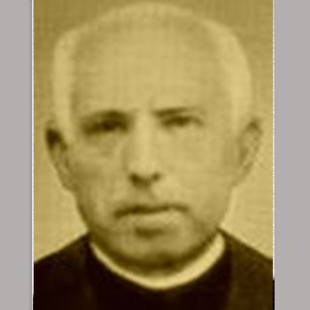

Isusovački blaženici
Isusovac · Svećenik · Mučenik
Bl. Pablo Bori Puig
1864.–1936.
Svećenik i isusovac nastavio je posjećivati starije osobe nakon raspuštanja zajednice u Španjolskoj te pred pogubljenje oprostio svojim progoniteljima i udijelio im blagoslov.
Tekst je preveden i prilagođen uz pomoć umjetne inteligencije.

Izvor slike
- Spomendan
- 29. rujna
- Zaštitništvo
- Nije navedeno u izvoru
- Životni vijek
- 1864.–1936.
- Služba
- Župni pastoral i skrb za starije
- Mučeništvo
- 29. rujna 1936.
- Napomena o datumu
- Službena stranica Svete Stolice potvrđuje 29. rujna; zaglavlje isusovačkoga životopisa navodi 29. prosinca.
U kalendaru zbirke koristi se dan smrti. Taj datum nije zasebna potvrda liturgijskoga spomendana.
Životopis
Pablo Bori Puig već je bio svećenik kada je pristupio Družbi Isusovoj. Nakon župnoga rada služio je u novicijatu kao ministar kuće. Ukidanje Družbe u Španjolskoj 1932. raspršilo je zajednice i ograničilo njihov apostolat, ali nije prekinulo njegovo pastoralno djelovanje.
I dalje je posjećivao starije osobe u domu Malih sestara siromaha. Tijekom građanskoga rata uhićen je s bratom Vicenteom Salesom. Neposredno prije nego što su na njih zapucali, oprostio je svojim progoniteljima i blagoslovio ih. Pripada skupini jedanaestorice isusovačkih mučenika iz Gandíje i Valencije, ubijenih između kolovoza i prosinca 1936.
Tekst je preveden i prilagođen uz pomoć umjetne inteligencije.